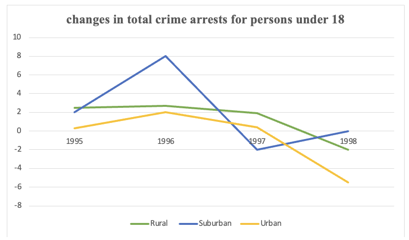

Task 1
You should spend about 20 minutes on this task.
The line graph gives information about percentage changes in total crime arrests for persons under 18 by locality in USA, 1995-1998.
Summarise the information by selecting and reporting the main features making comparisons where relevant.
Write at least 150 words.
Task 2
Write about the following topic:
You should spend about 40 minutes on this task.
Some people think that developing countries need financial help form
international organization. Others think that practical aid and advice
that is needed.
Discuss these views and give your own opinion.
Give reasons for your answer and include any relevant examples from your own knowledge or experience.
Write at least 250 words.